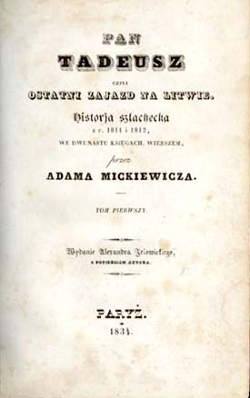

Pan Tadeusz, czyli ostatni zajazd na Litwie: historia szlachecka z roku 1811 i 1812 we dwunastu księgach wierszem
Adam Mickiewicz
Strona Główna
Księga nr 1
Księga nr 2
Księga nr 3
Księga nr 4
Księga nr 5
Księga nr 6
Księga nr 7
Księga nr 8
Księga nr 9
Księga nr 10
Księga nr 11
Księga nr 12
